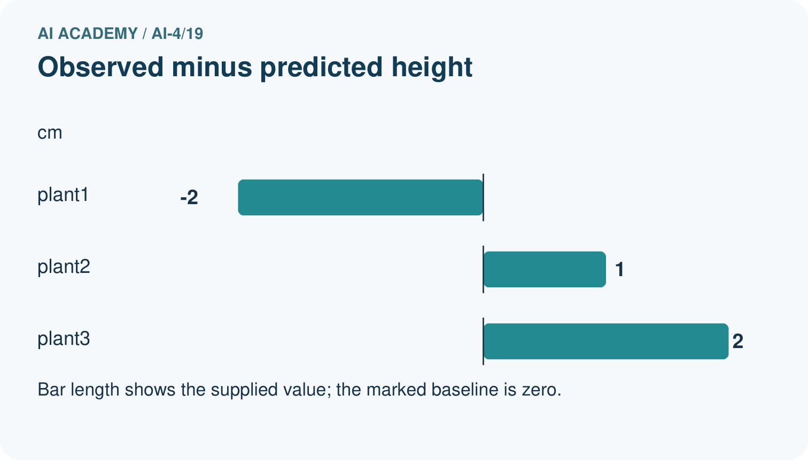
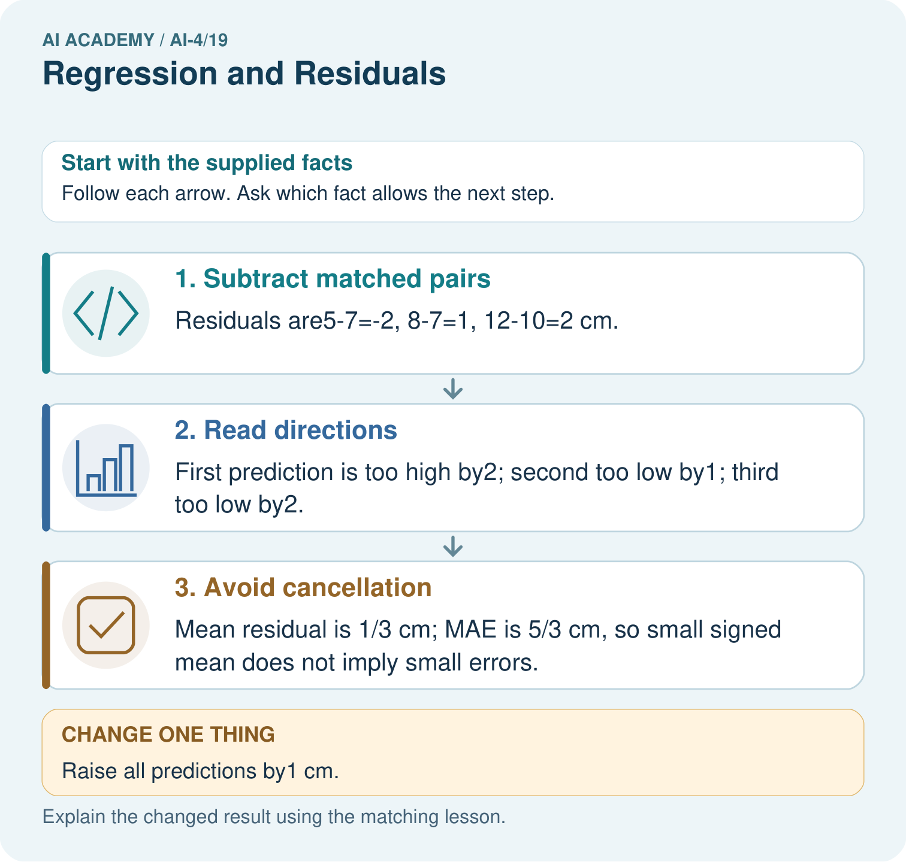

AI Academy · Level 4 · Grade 9 · Week 19 · Workbook
Regression and Residuals
Learn to understand, design, build, test and explain AI systems responsibly.
Project: Responsible Plant Classifier
Workbook · 1 of 20
Recall and choose your starting point
Try the recall before opening notes. Then use a different colour or a labelled second line to correct your explanation.
Error Analysis
Without opening the old lesson, explain one key idea from Error Analysis. Give an example and a mistake that the idea helps you avoid.
Accuracy and Imbalance
Without opening the old lesson, explain one key idea from Accuracy and Imbalance. Give an example and a mistake that the idea helps you avoid.
Train a Classifier
Without opening the old lesson, explain one key idea from Train a Classifier. Give an example and a mistake that the idea helps you avoid.
Workbook · 2 of 20
Practise with fading help
Use W2: Explain cancellation for Regression and residuals. Record the answer once; the lesson and workbook refer to the same attempt.
| Given inputs | Procedure I chose | Middle steps | Result and check |
|---|---|---|---|
Workbook · 3 of 20
Individual reasoning check
Use the worked case for Regression and residuals. Proposed explanation: “A final answer is enough”. Decide whether this explanation is supported. Point to the step or supplied fact that decides; explain your repair if needed.
Workbook · 4 of 20
Independent transfer case
Independent case: Apply independently
Observed [6, 10, 13], predicted [8, 9, 11] cm. Give residuals, mean residual and error directions.
Attempt this case before feedback. Record any help. Earlier examples below are further practice; a case already practised with feedback cannot establish fresh transfer.
Workbook · 5 of 20
Your learning target
Actual leaf length is 7 cm and prediction is 10 cm. Using residual=actual−predicted, calculate residual and absolute error. Interpret the sign.
Workbook · 6 of 20
Solve the given case
Actual height=12 cm, prediction=9 cm. Residual means actual minus predicted.
Calculate and interpret.
Show your trace, calculation or evidence
Workbook · 7 of 20
Check a changed case
Define residual as actual minus predicted. Actual height is 14 cm and prediction is 17 cm. Calculate residual and interpret its sign.
My independent answer and reason
Week 19 Test and reflect
Workbook · 8 of 20
Design a revealing test
Create a changed input, boundary case or missing-information case. Write the expected answer or safe response before testing.
| Test record | My evidence |
|---|---|
| Changed input or condition | |
| Expected answer or fallback | |
| Observed result | |
| Why the result occurred |
Workbook · 9 of 20
Project checkpoint
Use a miniature growth-prediction side experiment to distinguish regression evidence from the main classifier metrics.
The project change and evidence I will keep
Workbook · 10 of 20
Self check
I can explain the mechanism. I can show evidence. I can handle a changed case. I can name a limit. Mark each as not yet, with help or independently, and attach supporting work.
Teacher review ____________________ Next step ____________________
Workbook · 11 of 20
Transfer practice from the original programme
Actual leaf length is 7 cm and prediction is 10 cm. Using residual=actual−predicted, calculate residual and absolute error. Interpret the sign.
Record support used: none, hint or teacher explanation.
Workbook · 12 of 20
W1 Calculate residuals
Compute the worked residuals and identify overprediction.
Workbook · 13 of 20
W2 Explain cancellation
Why does mean residual zero not imply perfect predictions?
Workbook · 14 of 20
W3 Read a pattern
Interpret residuals -2, 0, 3 ordered by growth stage.
Workbook · 15 of 20
W4 Apply independently
Observed [6, 10, 13], predicted [8, 9, 11] cm. Give residuals, mean residual and error directions.
Workbook · 16 of 20
W5 Check units
A report combines 2 cm and .02 m as if they were different magnitudes. Repair it.
Workbook · 17 of 20
Feedback, return check and learning record
| Evidence | My record |
|---|---|
| Worked alone / hint / model | |
| First step I repaired and why | |
| New case checked later; date and result | |
| What I can now explain without notes | |
| One remaining question |
Revisit this idea with your teacher after a delay. Familiarity is different from explaining and using it on a changed case.
Workbook · 18 of 20
Pictorial case practice: Regression and Residuals
Use residual signs to say whether each plant-height estimate is too high or low.
Residual=observed-predicted. Observed heights [5, 8, 12] cm; predicted [7, 7, 10] cm.
All inputs and outcomes in this worked example are invented classroom data; no real model run is claimed.


Which statistic reveals the size of errors without cancellation? Point to the relevant step in the picture, then write the changed result and the rule or evidence that supports it.
Support used: alone / hint / worked example. This record is practice evidence.
Project connection: For your Responsible Plant Classifier, save the input, procedure, observed result and limitation of this check. Label this worked example as practice; use a different, previously unreviewed case when checking independent understanding.
Workbook · 19 of 20
Project portfolio milestone
Project: Responsible Plant Classifier
Current milestone: Evaluate and revise. Compare with your starting method, explain errors and record a justified revision.
For your Responsible Plant Classifier, save the input, procedure, observed result and limitation of this check. Label this worked example as practice; use a different, previously unreviewed case when checking independent understanding.
| Evidence to keep | My record |
|---|---|
| This week’s input and deciding step | |
| Prediction and actual result (or labelled paper trace) | |
| One change since the previous checkpoint and why | |
| One error or limit and the next test |
Workbook · 20 of 20
Supported practice and learning evidence
Use this supported practice once, in the browser or on paper. Keep the reserved independent assessment for a separate first attempt before teacher feedback.
Use residual signs to say whether each plant-height estimate is too high or low.
Practice 1: explain the deciding evidence
Which labelled step matches this detail? Mean residual is 1/3 cm; MAE is 5/3 cm, so small signed mean does not imply small errors.
1. Read directions
2. Avoid cancellation
3. Subtract matched pairs
Hint if needed: Read the steps in the pictorial case. Match the supplied detail to the stage that performs or records it.
After your attempt, compare with the supported explanation: Avoid cancellation Mean residual is 1/3 cm; MAE is 5/3 cm, so small signed mean does not imply small errors. Read the picture in order. Mean residual is 1/3 cm; MAE is 5/3 cm, so small signed mean does not imply small errors. The arrows show which recorded input or intermediate result each decision uses. Explain the deciding step aloud before checking the changed case; pointing to the final answer alone does not show how it follows.
Practice 2: explain the deciding evidence
Changed-case practice: Raise all predictions by1 cm. Which conclusion is supported by the supplied facts?
1. This one example guarantees correct results for every future input.
2. We can decide the result without examining the changed input or the procedure.
3. Residuals become [-3, 0, 1]; mean=-2/3 cm and MAE=4/3 cm.
Hint if needed: Use the changed condition and the deciding step in the pictorial trace. The answer must say what follows from those facts.
After your attempt, compare with the supported explanation: Residuals become [-3, 0, 1]; mean=-2/3 cm and MAE=4/3 cm. Each residual decreases by1 under the observed-minus-predicted convention.
Repair a missing building block
Review Error Analysis (ai-4/18). Goal: Categorize development errors using evidence. Short practice: What evidence would support the claim that a change helps fresh dim-light images? Point to the relevant step in the picture, then write the changed result and the rule or evidence that supports it.. Return to this week and explain what you changed.
Review Accuracy and Imbalance (ai-4/16). Goal: Explain why overall accuracy can hide failure on a less common class. Short practice: Why can the 90% baseline still be unsuitable for a detection task? Point to the relevant step in the picture, then write the changed result and the rule or evidence that supports it.. Return to this week and explain what you changed.
Review Train a Classifier (ai-4/13). Goal: Connect training-only scaling and neighbour prediction in one pipeline. Short practice: Which pipeline record would help another team reproduce the result? Point to the relevant step in the picture, then write the changed result and the rule or evidence that supports it.. Return to this week and explain what you changed.
Predict, run and debug
The browser lab lets you edit the supported Python examples already included in this lesson. Predict first, run, inspect the actual output or error, change one input, then run again. Keep code, predictions, actual results and a reasoned revision together. On paper, label your result as a trace rather than an execution.
Keep your completed work
Use Download completed work in the hosted lesson to export your answers, reflections, practice feedback and code-run evidence. Open the HTML copy to read or print it. Drafts stay in this browser when storage is available; clear drafts on a shared device.